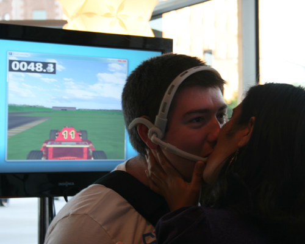
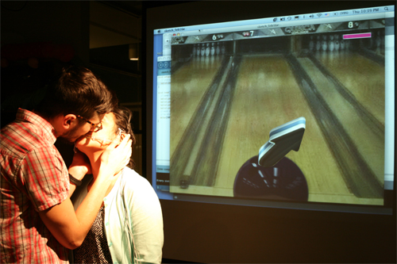
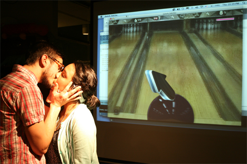
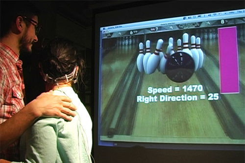
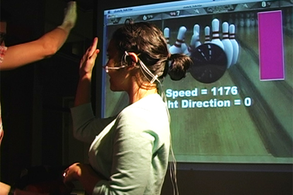

Dr. Maysam Ghovanloo (I got inspired by his tongue controller.)

Kiss Controller by Hye Yeon Nam is licensed under a Creative Commons Attribution-NonCommercial-NoDerivs 3.0 Unported License.
Based on a work at www.hynam.org
Racing Car Game

Bowling Game (Model: Thomas Lodato (left), Sarah Puerto(right), Photographer:Hye Yeon Nam)
 
 
Documentation
Kiss Controller is a game input device that steers a racecar or controls the direction and speed of a bowling ball while users are kissing. Recently, with the improvement of camera capabilities and related tracking systems, game input systems such as Nintendo Wii controllers or Microsoft Kinect games are incorporating more body positions and movements. Unlike existing game input devices, Kiss Controller seeks to generate the emotional experience of a kinetic act while users play the game rather than control games with their body.
1. Racing Car Game
One person has a magnet on his/her tongue and the other person wears the headset. While they kiss, the person who has the magnet on his/her tongue steers the racecar. The goals of this game are to reach the finish line with the fastest time, move their tongue left/right to steer and collect hearts to lower their time.
2. Bowling Game
One person has a magnet on his/her tongue and the other person wears the headset. While they kiss, the person who has the magnet on his/her tongue, controls the direction and speed of the bowling ball for 20 seconds. The goals of this game are to guide the ball so that it maintains an average position in the center of the alley and to increase the speed of the ball by moving the tongue faster while kissing.
Kissing is an intimate behavior that can be developed into a game device. It has not yet been proposed in the game industry. Kiss Controller shows how the human tongue can be used to control a game and how people can become creatively involved in a game.
Collaboration
Hye Yeon Nam and Sam Mendenhall
Speciall Thanks
Dr. Maysam Ghovanloo (I got inspired by his tongue controller.)
Kiss Controller by Hye Yeon Nam is licensed under a Creative Commons Attribution-NonCommercial-NoDerivs 3.0 Unported License.
Based on a work at www.hynam.org